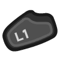
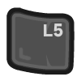
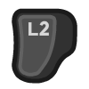
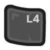

Selection¶
Note: This page assumes that you have the left-click and right-click behaviors in Myth set up as described on the Controls page.
Main Controls¶
Select All Visible¶
 to select all units visible on the screen.
Curiously, if there are no un-selected units on-screen when you do this action, it will instead behave like “deselect all”.
Manual Selection¶
to control the cursor.
to click at the cursor location; you can hold a click while moving the cursor to click-and-drag.
These controls let you do a bunch of standard mouse-selection kinds of things:
Click on a single unit to select it.
Double-click a unit to select it and all nearby units of the same type.
Click-and-drag to band-select a group of units.
Those actions will replace any current selection. If you need to make “tweaks” to an existing selection, see the Other Controls section below.
Preset Groups¶
Ideally most of your unit-selection activity during a game will be through preset unit groups. Regardless of whether you are creating a preset group or recalling (selecting) an existing preset group, you need a way to identify it, so let’s talk about that first!
has a preset group associated with each of its four directions.
 also has a preset group association.
That gives you five buttons to play with. But also:
 can be used to mode-shift any of those controls to make it reference a different preset group.
So in total there are 10 possible preset groups.
Preset Creation¶
Once you have some set of units selected, you can designate those units as a preset group. (This will replace any current unit assignments for that preset.)
is used in button combos with the preset-group controls to create presets.
Some examples:
will create a preset group associated with “D-Pad right”.
will create a different preset group than above, because of the mode shift.
will create a preset group associated with that paddle button.
Preset Selection¶
To recall an existing preset, just press the control that identifies its group. The units in that preset will become your current selection.
Some examples:
will recall the preset group associated with “D-Pad right”, selecting all the units assigned to that preset group.
will recall the preset group associated with the mode-shifted “D-Pad right”.
will recall the preset group associated with that paddle button.
You can also center the camera on a preset’s units while selecting them, by double-tapping the preset’s control. (If you’re playing at full zoom-out it’s not really that “centered”, but good enough.)
Other Controls¶
Deselect All¶
will clear any current selection. This is a little awkward to use but (IMO) never needed in any urgent situation.
Manual Selection with Modifiers¶
 (i.e. shift) can be held when clicking on a single unit, to toggle that unit’s selection state without affecting the rest of your selection.
can also be held during a double-click or band-select, to add the affected units to your current selection (if they’re not already part of it).
(i.e. alt) can be held during a band-select to do a “band-deselect”, where all of the affected units will be removed from your current selection (if they’re part of it).
Preset Selection with Modifiers¶
(i.e. shift) can be held when recalling a preset, to add that preset’s units to your current selection.
Number Wheel¶
can be used to bring up a number wheel and click on a number; this can optionally be used to identify the ten preset groups. However the other controls described above are a faster method. This number wheel is really intended for dealing with some in-game menus as described on the Other Stuff page.
Preset Deletion¶
Preset deletion (clearing its assigned units) will only work if the current selection exactly corresponds to the set of units in some preset. So the first thing to do is to recall (select) the preset that you want to delete.
Then:
double-tap to delete a preset. Double-tap is required to make sure you don’t do this accidentally.
(I don’t believe I’ve ever used this when playing Myth.)